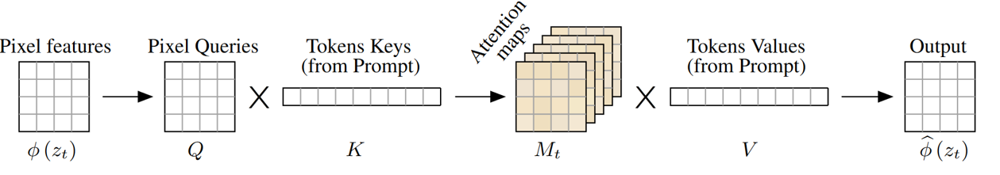
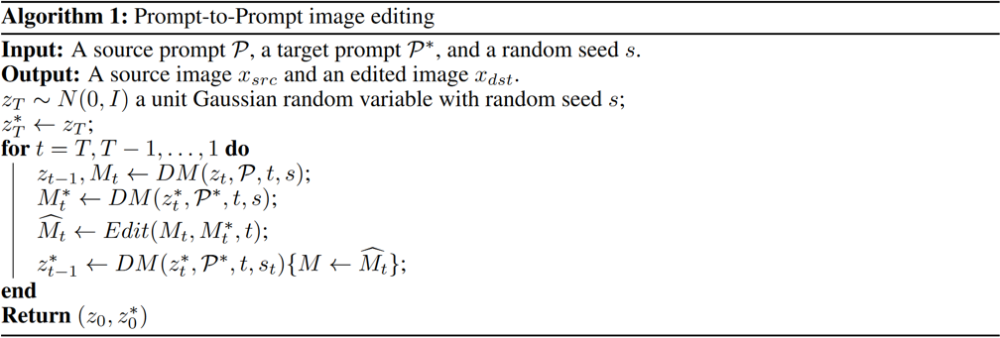
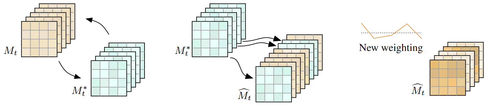
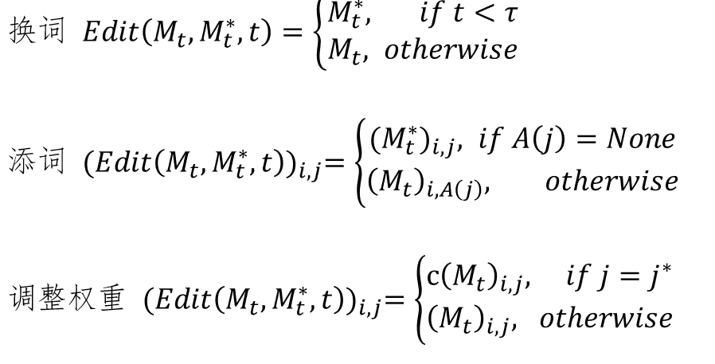

论文：Prompt-to-Prompt Image Editing with Cross Attention Control
作者：Amir Hertz, Ron Mokady, Jay Tenenbaum, Kfir Aberman, Yael Pritch, Daniel Cohen-Or
发表：arXiv 2022
简介：文本驱动的控制生成模型能够根据给定的提示词生成高质量多样化的图片输出。然而将这些模型的能力拓展到文本驱动的图片编辑任务上时，一个不可避免的问题是，提示词的微小变化往往会导致生成的图片完全不同。此前的解决方法要求用户提供一个掩膜来定位编辑区域，但这忽略了掩膜区域内的内容和结构。本文作者发现模型中的交叉注意力是控制输出的图片的空间布局和提示词之间的关系的关键。基于这一点，本文的工作Prompt-to-Prompt通过向新图生成过程注入旧的交叉注意力，仅通过文本控制就能实现保留旧图内容和结构布局的图片编辑。Prompt-to-Prompt支持包括图片的局部编辑，整体风格编辑，甚至能够精细地控制提示词中的一个词在图中被反映的程度。
背景介绍
近期，大规模语言-图像（LLI）模型，如 Imagen、DALL·E 2 和 Parti，展现了非凡的生成语义和组合能力，赢得了研究界和公众的广泛关注。这些LLI模型在极大的语言-图像数据集上进行训练，并使用最先进的图像生成模型，包括自回归和扩散模型。然而，这些模型并未提供简单的编辑手段，并且通常缺乏对给定图像特定语义区域的控制。特别是，文本提示的微小变化可能导致完全不同的输出图像。为了解决这个问题，基于LLI的方法要求用户显式地遮住图像的一部分进行修复，并驱动编辑图像仅在遮住的区域变化，同时匹配原始图像的背景。尽管这种方法提供了吸引人的结果，但是使用蒙版过程繁琐，阻碍了快速和直观的文本驱动编辑。更重要的是，使用蒙版遮盖图像内容会移除重要的结构信息，这在修复过程中被完全忽视。因此，一些编辑能力超出了修复的范围，比如修改特定对象的纹理。Prompt-to-Prompt引入了一种直观而强大的文本编辑方法，通过预训练的文本驱动的扩散模型编辑图像。
方法介绍
通过观测，作者扩散模型生成的图像结构和外观不仅取决于随机种子，还取决于像素与文本之间通过扩散过程的交互。本文提出的Prompt-to-Prompt图像编辑，就是通过修改cross-attention层中发生的像素到文本交互。更具体地说，通过注入输入图像的cross-attention map使得扩散模型能够保留原始的组合和结构。
Cross-attention 机制
当文本与扩散模型一起工作时，它们被引入扩散模型的方式是交叉注意力机制，它控制图像各部分对文本有何种程度上的反映。使用3个矩阵Q, K和V来分别代表查询、键、值，从文本特征中得到K和V，从当前的带噪图像得到查询Q。图像的空间布局和几何形状取决于交叉注意图。

所以，这篇论文的想法是，既然之前已经有了生成图像的注意图，当我们改变提示时，可以直接根据提示的编辑方式将旧图的注意力引入的新图的注意力。基于此，本文提出了一个通用的算法，然后然后通过定义编辑函数来完成具体的编辑操作。

编辑函数
为了将方法应用于各种编辑应用，作者针对各种不同的编辑设计了具体的编辑函数，包括换词、添词以及权重控制。

换词是指将原提示中的某些词替换为其他词，例如，将“dog”换成“cat”。编辑函数将“猫”的交叉注意力直接替换成“狗”的交叉注意力，但是维持矩阵V不变。添词是指用户向提示语中添加新的词，例如在“a castle next to a river”前面加上“children drawing of ”，为了保留原图的一致性，在新旧提示词共有的词上应用注意力注入。权重调整是指用户可能希望增强或减弱某个词对生成图像的影响程度，可以通过一个系数对其进行调整。

总结
基于文本提示的图像编辑技术，对于习惯于用文本表达自己想法的人来说非常有吸引力，但这对于图像编辑技术来说是很有挑战的，因为即使修改了文本提示中的一个小细节，也可能会得到完全不同的图像。本文作者了发现了文本到图像扩散模型中cross-attention的强大功能，是控制图像空间布局和文本提示中每个单词之间关系的关键，通过cross-attention注入，作者提出了三种编辑方法，在一些应用场景效果非常好。但同时也发现该技术仍然受到一些限制，例如当前的Inversion过程会导致一些生成图像出现失真，这需要再未来的工作中进行研究。
后续工作
Null-text inversion for Editing Real Images using Guided Diffusion Models
InstructPix2Pix: Learning to Follow Image Editing Instructions
✉️ zjuvis@cad.zju.edu.cn